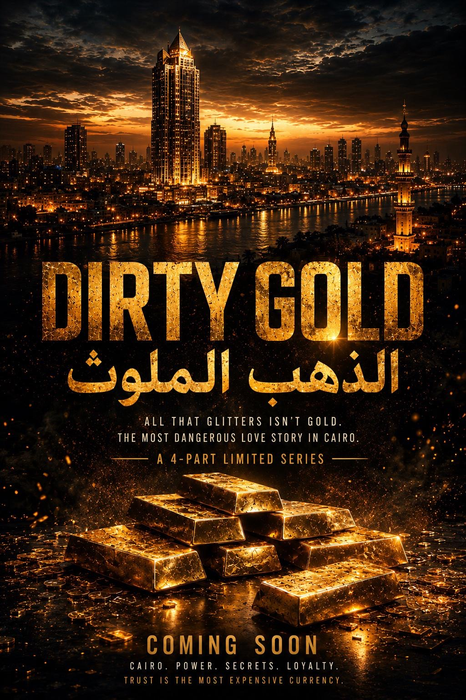

All that glitters isn't gold. The most dangerous love story in Cairo.
A bilingual prestige series — Cairo · Giza · Dubai · Saudi Arabia
Created by Odain Watson
Directed by Tarik Afifi(Assistant Director, Dune)
Written by Mazen Saad
Developed with Gamma Engineering

Teaser one-sheet
One
Series Overview
Format
Full returnable series — 8 episodes per season, built on four foundational chapters of two episodes each.
Language
Arabic and English, bilingual production.
Setting
Cairo and the Pyramids of Giza, anchored at Starlight Festival, extending into Dubai and Saudi Arabia through Khalid's storyline.
Comparables
Mr. & Mrs. Smith · Lupin · Money Heist · Fauda
Tone
Sexy, glamorous, fast-paced — prestige drama in the tradition of Ryan Murphy's precision and Aaron Spelling's excess. Heist mechanics played for tension; marriage played for comedy and ache; fashion and Cairo treated as characters in their own right.
Two
Logline
Zaid and Layla are madly, genuinely married — and completely unaware that the person sleeping beside them every night is the most dangerous thief in Cairo.
Over four nights of Cairo's biggest festival, their secrets, their marriage, and their crews collide, building toward a global heist franchise.
Three
Season Arc
Four foundational chapters across eight episodes.
1
All That Glitters Episodes 1–2
Parallel heists, unaware spouses. Both rob the same room, forty seconds apart, neither knowing the other was there.
2
Two Thieves, One Bed Episodes 3–4
Mutual suspicion. Parallel operations nearly collide in public, and Khalid appears as an unknown rival.
3
The Longest Beat Episodes 5–6
Confrontation. The full marital reckoning plays in real time; Khalid learns his rival is Zaid, and finds Layla.
4
Closing Night Episodes 7–8
Convergence. The marriage and the heist land on the same night, and Khalid and Zaid are forced into uneasy alliance against a larger threat.
The four chapters are the spine the original limited-series structure was built on. At eight episodes, each chapter breathes across two hours instead of one.
Four
Character Breakdowns
Zaid Hassan
Egyptian, late 20s — Series Lead
Cairo's most sought-after forger and artifact specialist, capable of producing replica antiquities so precise they fool anyone short of a laboratory. Zaid wears his gold chain like armor and moves through elite spaces with practiced ease — a performance nearly as elaborate as his wife's.
Warmer and more openly funny than Layla, he's the one who breaks first in an argument, the one who reaches across the table. Unlike Khalid, Zaid maintains a code — there are lines he won't cross. Underneath the charm is a man doing incredibly high-stakes, precise work who has never let his wife see him sweat, until he has to.
Arc
Comfortable secrecy → discovery → forced honesty → choosing to build something real with Layla, professionally and personally, for the first time — while confronting a rival in Khalid who mirrors and threatens everything he's built.
Layla Hassan
Saudi, 26 — Series Lead
The most dangerous infiltration operative in the Arab world, and — as far as her husband knows — a woman who cannot cook. Layla moves through the world in two registers: the composed, multilingual operator who can hack a government financial system in forty-one seconds, and the domestic performer who stages elaborate fictions of ordinary married life.
Precise, unreadable under pressure, privately exhausted by how much of herself she hides from the one person she chose to spend her life with. Her tell — the only one — is a single deep-red sadu stitch on the collar of her robe, never explained.
Sadu, the Najdi weave. The stitch is the only mark of her real self anywhere in the series — and the only red in this document.
Arc
Suspicion → confrontation → reluctant, dangerous partnership with Zaid, culminating in choosing him — and the job — over self-protection. Becomes a target of Khalid's manipulation as he seeks to unbalance Zaid.
Khalid Rashid
Emirati, early 30s — Recurring / Major Guest Star, Chapters 2–4 (Episodes 3–8)
The eldest son of a wealthy, respected Emirati family, given every advantage and every expectation to inherit the family business — and who walked away from that life entirely. From childhood, Khalid possessed an intense curiosity about things he was never meant to touch: locks, security systems, the minds of the people who designed them. His interest was never primarily about money. It was the realization that someone had built a system, and that he could be smarter than it.
Khalid doesn't steal because he needs to. He steals because he loves it — the planning, the patience, the details, and above all, walking away knowing no one realized he was there. Potential to expand into a series regular.
Method
Khalid is not a hacker or a loophole exploiter. He understands people — how a security guard thinks, when an officer begins to panic, who can be bought and who can't. He doesn't break a system; he makes it believe he belongs inside it. His work is built on three principles: precision, composure, and cleanliness. He has no tolerance for chaos, leaves nothing to chance, and treats timing as the plan itself, not merely part of it.
What he steals
Rare watches, family heirlooms, works of art, and — increasingly — antiquities with real historical weight: objects that vanished from the record, manuscripts known to only a handful of people, pieces believed lost for decades. To Khalid, rarity and impossibility are what make an object irresistible, not price.
Human manipulation
Khalid makes people help him without ever realizing they're helping him. He reads what drives a person — money, ego, fear, greed, recognition — and uses it so naturally it never feels like manipulation at all.
No code
Unlike Zaid, Khalid does not believe there are lines a thief should never cross. If someone must die for a job to succeed, he will do it without hesitation, guilt, or second thought.
Relationship with Zaid
Neither traditional hostility nor friendship — a long-standing, deeply personal rivalry built on mutual respect neither man would ever admit to. Khalid has known Zaid for years and has learned never to underestimate him. Their dynamic resembles Batman and the Joker: each knows there are moments he could end the other, but ending the game holds no appeal. Khalid does not want Zaid dead — killing him would mean killing the only opponent capable of playing at his level. Every job Zaid pulls off becomes a new challenge; every time Khalid outplays him is a satisfaction nothing else provides.
Stealing is not a crime; it is an act of freedom through which he asserts his superiority over a system that believes itself impenetrable.
Arc
Chapter 2, Episodes 3–4 — The Unknown RivalKhalid works a parallel operation at Starlight Festival, targeting the same statues as Zaid, without knowing his rival's identity. A silent game develops between two thieves who don't recognize each other — Khalid, rather than feeling threatened, feels genuinely excited to have finally met someone who can keep pace with him.
Chapter 3, Episodes 5–6 — The Rival Has a FaceKhalid discovers his rival is Zaid, a man he's known for years. The game changes completely — no longer about the artifact, but about infiltrating and outplaying the other's entire world. He tracks Zaid, discovers Layla, and begins exploiting her presence to destabilize Zaid — not out of desire for her, but to prove his rival can lose control too. The rivalry turns personal.
Chapter 4, Episodes 7–8 — The Rules ChangeKhalid and Zaid discover their rivalry was only a piece of a much larger game — a bigger enemy, a larger plan, both of them exploited by a system designed to use their skills for someone else's benefit. For the first time, Khalid needs help he cannot provide himself, and Zaid needs him just as much. They don't become friends, but their rivalry becomes a weapon they can use together instead of an obstacle between them.
Casting target
Mohamed Faisal Mostafa — Emirati actor, first to hold a key role in an international hit series (Apple TV+'s Hijack), stunt performer on Dune: Part Three, action-trained.
Minister Youssef Tariq
Egyptian, 50s–60s — Recurring, all episodes
The season's connective tissue and central mark. Publicly, the Minister of Culture — a man who attends Starlight Festival because he "loves music and heritage." Privately, he's laundering millions in stolen Egyptian antiquities through the festival's chaos as cover, using a financial pipeline running through Geneva, the Caymans, and Dubai.
Tariq is a masterclass in performed sincerity. The audience should be genuinely unsure, in early episodes, whether he's a monster or simply a very good politician.
Arc
Untouchable public figure → security tightening around a threat he can't name, because he can't admit he's been robbed → cornered by the season's convergence.
Reese
American, 32–38 — Series Regular
Zaid's off-books logistics fixer — ex-intelligence, meticulous, allergic to vulnerability. Reese secures technical drawings, forgers, and exit routes, and has never once let anyone see him fail. Dry, controlled, quietly arrogant about his own competence.
Dani
American, 29–35 — Series Regular
Layla's asset and technical contact — magnetic, chaotic, brilliant, and constitutionally incapable of staying in her lane. Mapped the entry point that makes the pilot's heist possible; expects to be paid and respected accordingly.
Reese / Dani dynamic
The toxic mirror to the central marriage — professionally brilliant, personally catastrophic together. Where Zaid and Layla have trust wearing a lie, Reese and Dani have heat with zero trust.
Five
World & Setting
The series is anchored entirely at Starlight Festival, the real international music festival debuting October 8–11 at the Pyramids of Giza — five stages, a major international lineup, and a VR installation, positioned so the Great Pyramid dominates the sightline from the main stage as a constant, watching presence over the story.
The festival is not a backdrop. The show is structurally built so it cannot be removed without breaking the premise.
Khalid's storyline extends the world into Dubai and Saudi Arabia — a story spanning Egypt, the Gulf, and beyond. It plants the seeds for the series' stated international expansion into Dubai, Paris, New York, and Berlin in future seasons, with Cairo and Giza remaining the permanent point of origin.
Cairo / GizaOrigin point. The festival, the Minister, the marriage.
DubaiKhalid's world, and one end of Tariq's laundering pipeline.
Saudi ArabiaLayla's ground, and the season's reach beyond Egypt.
Six
Tone & Visual Identity
Prestige, luxury, and visually sophisticated presentation throughout — gold as a recurring visual and thematic motif: jewelry, artifacts, the pyramid itself lit gold at night.
Heist sequences are precise, patient, and controlled, mirroring Khalid's own philosophy of composure over chaos. Marital scenes are shot with the same close, observational attention as the heists — comedy and intimacy given equal visual weight to suspense.
Seven
Season-End Positioning
The finale converges all threads: Zaid and Layla's choice to work together rather than turn on each other, Khalid and Zaid's forced alliance against a larger enemy, and Minister Tariq's operation collapsing under the season's accumulated pressure.
The marriage's fate is left deliberately ambiguous — the job's success stands in for an answer neither confirmed nor denied.
A final image — passports on the dash: Dubai, Paris, New York, Berlin — signals the door to expansion without resolving it, positioning Season Two's Gulf-forward storyline through Khalid as a natural next chapter.
An ambiguous marriage. A successful heist. A door left open for what's next.
Eight
Team & Materials
Creative & producing team
Odain WatsonCreator & Showrunner
Mazen SaadWriter
Tarik AfifiDirector — Assistant Director on Dune
Yam FidaCo-Showrunner & Executive Producer
Issam MessaoudiExecutive Producer
Odaingerous LLC, developed in partnership with Gamma Engineering.
Companion documents
The twelve-panel presentation deck — this bible in pitch form. Click to enlarge.The Dirty Gold × Starlight Festival partnership deck — distribution pathway, capital recovery structure and the multi-city expansion plan. Click to enlarge.